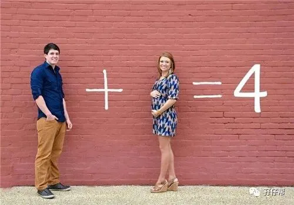
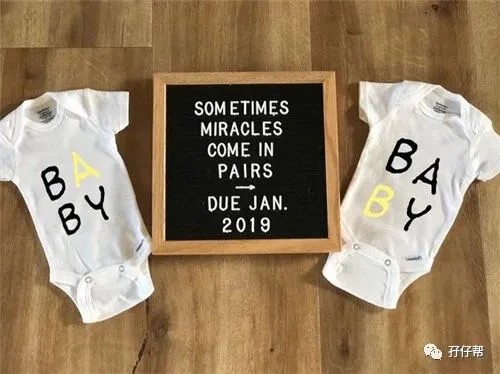

文|圆圈妈，一个文思如尿崩的双胎妈妈
图|来自网络，如有侵权，请联系删除
· 正 · 文 · 来 · 啦 ·
【01】两胎儿的发育情况
孕33周的胎宝宝有大南瓜那么大了，从头部到臀部长约45CM， 约2116G▼：
孕33周的双胞胎胎儿发育图▼：
【02】圆圈妈的孕期回忆录
Ⅰ 人生第一次挂急诊
孕周33W+2D，晚饭吃到一半，感觉肚子很硬，这是不同寻常的发紧发硬，还伴有下坠感。
好像里面的胎儿被某种力量推动着往耻骨处挤似的，肚子好像被灌了水的气球，一直往下沉。
我以为过一会儿就会恢复正常，结果还是很硬，耻骨联合处还伴随着一种酸胀疼痛感。
我不得不放下筷子，抱住肚子，疼痛的样子让圆圈爸看见了，二话不说就叫了出租车往留医部狂奔。
就这样我被圆圈爸五花大绑地拖去了深圳市人民医院。
这是我长这么大第一次挂急诊，急诊的医生是个男医生，很生硬的语气问，
“破水了吗？”
“没！”
“见红了吗？”
“没！”
“肚子痛吗？”
“没！”
“那你来干嘛？”
“我…双胎，肚子硬！”
其实我好想怂回去：“老娘是来玩过家家的，谁没事大半夜还往医院跑啊。”
看到医生那么恶劣的态度，我窝了一肚子气，感觉肚子没那么发紧发硬了。
此刻只觉得饿，很想回去吃饭，我真希望是一场乌龙！希望是自己心理作用！
医生听到双胎，态度缓和不少，简单询问后，就要给我做内检。
这是第一次被男医生做内检，也是目前为止最不堪入目的回忆，尤其是面对这样凶神恶煞的男医生，我觉得我直到老死都会记得那耻辱的一幕。
“裤子脱掉，双腿张开！”
“啊….！？”
“快脱！还要不要做检查啊？”
“...”脱吧！反正怀孕了就没有底线了，脱裤子而已。
“别紧张，别叫，快放松！”男医生很麻利地带上手套，把手伸进了我的阴道里做内检。
本来脱了裤子张腿对着男医生就够尴尬了，没想到检查的时候，男医生还要探来探去…当时真是又疼又脸红又尴尬。
此刻的心里悲壮极了！请问我的“三观”丢哪去了？
“做个B超吧，给你开了住院单，出去缴费吧！”等我元神归位，医生已经把缴费单丢给我了。
☞☞TIPS☜☜：羞答答的妹子们，不必太纠结内检时是男医生还是女医生，在医生的眼里，没有男人和女人的区别！
你很在乎的那些隐私，他们早已经见怪不怪了，别太当一回事。
哪怕你真的有一种“被强奸”的感觉，你也忍了吧，谁让咱怀孕了呢？
Ⅱ 第一次打硫酸镁
我躺在移动担架上，圆圈爸推着我在嘈杂的走廊外等待做B超。
急诊大厅的人都齐刷刷地看着担架上肚大如箩的我，好奇，猜测，看热闹….
可能他们都在打赌“这大肚婆肯定熬不过今晚。”
B超完了后，我被直接送到住院部，此时已经是凌晨了，我感觉肚子没有发硬了，好想回去，不想住院了！
可是圆圈爸已经在产前区办理好住院手续了，就这样，我的住院保胎之路在孕33周+2天正式拉开帷幕。
在护士站，护士熟练地在我手背的血管上狠狠扎了一只又粗又大的留置针，接着把我带到医护室录资料。
当晚，我像劳改犯一样，被一值班男医生从头到尾问了遍。
平时身体好吗？
月经啥时候来的？
有没有不良嗜好？
有没有疾病史？
….
期间，护士过来给我输液，并告诉我这是保胎药硫酸镁，可能会有点发热和憋气。
果然，我马上奄奄一息了，心跳加速，堵得慌，浑身发热，说话都要憋一口气才能说完，整个人都晕晕的。
我的手一直在发抖，提不上力气了，无法填写表格，只能全程我口述，圆圈爸代写。
折腾到凌晨两点钟，我终于被安顿在床位上，躺下了！
护士往我鼻子上放了不知道啥东西，据说是吸氧的，可是我觉得越吸氧越憋气！
圆圈爸买了折叠单人床在我旁边呼呼大睡，我却失眠了，手上挂着吊瓶，很约束，很不习惯...
这一夜，我经历了人生中的很多第一次：
第一次挂急诊
第一次被人推进病房
第一次吸氧
第一次手上插满管子
第一次被人伺候着上厕所
第一次深刻感觉生命好渺小，可是很强大！
我在朋友圈发了个信息：我们娘仨加油！
这是怀上双胞胎后，第一次在朋友圈光明正大地宣布：我怀孕了，是双胞胎！
☞☞TIPS☜☜：打硫酸镁的副作用 : 心跳加速、心悸、呼吸急促、颤抖、恶心、红斑、头痛、不安...
镁离子可以抑制肌肉收缩，所以连子宫以外的肌肉都受影响了，对孕妇的身体负担相当大，每天需要将尿液储存下来计算尿量，以免镁离子残留体内。
医生会定期验血验尿，就是担心镁离子的残留对身体有不好的影响,陪护的人要细心点协助医生，给与孕妇鼓励。
【03】我的住院保胎经历
Ⅰ 孕周33W+3D 住院第二天
经过一夜的混战，眯一会，醒一会，盼到了天明！早晨7点50分，圆圈爸被保安赶出去了，原来医生要查房，所有家属都要回避。
我终于见识到传说中的查房。
一个主任医师，带着一两个主治医师，后面跟着三四个实习医师，还有一个拎着胎心仪的小护士，走到每张床上，巴拉巴拉说几句...
我刚被收入院，很多检查还有待安排，轮到我的时候，我不知道该说什么。
打硫酸镁严重影响了我的大脑正常思考，我愣愣地看着医生，他们问一句，我就答一句！
查完房后，圆圈爸去上班了，婆婆和小姑子陪我去做心电图。
心电图检查在外科大楼，因为手上还挂着硫酸镁，路也走不远，我们从护士那里租了辆轮椅。
那是我第一次坐轮椅，很LOW，很DOWN，我不喜欢这样的感觉！像个废人！
心电图做完后刚回到病床，护士就往我屁股上扎了一针，别看针头小小的，刚扎下去就很疼，不一会儿，半边腿子就麻了，酸了…
原来这个后劲这么猛的一针就是传说中的地塞米松促肺针，据说是为了预防胎儿早产，提前打促肺针，可促进胎儿心肺成熟。
下午去做胎监，我被安排在待产房里，两个孕妇正躺在那里待产。
不同的是，她们都是等待开指，被宫缩折磨得求生不得求死不能的孕产妇。
我被她们那些撕心裂肺的哭爹喊娘和因疼痛而飚出的各种脏话，吓到一身冷汗！
我终于见识到江湖那句传言“女人真不是好惹的雌性动物”，关键时刻，真的彪悍得比母狮子还要凶猛！
我终于明白为什么榆林产妇会痛到要跳楼了，真的是痛到想死！
本能啊！
还好我没打算顺产，不然我真的不想生了！
不知道是不是心里太紧张了，这次胎监做了好久都不通过，我足足躺在那里一个小时。
注意，是平躺着做胎监，整个过程持续了60多分钟，而且不能乱动！
Ⅱ 孕周33W+3D 住院第三天
我跟查房医生说阴道分泌物异常，很快就有医生给我安排了阴道常规检查。
我听说要做内检，见鬼似的想逃。
我真的对内检有恐惧心理，我不想治了！
护士铁面无私地把我拖进了治疗室， 经过检查发现，有轻度宫颈炎和阴道炎，给我用上了消炎药。
内检后出了点血，血量不多，持续了两天，这让我很惶恐，担心是不是给护士暴力治疗捅破了。
还好最终得到医生确定的答复“内检后少量出血是正常的”。
Ⅲ 孕周33W+4D 住院第4天
促肺针6针打完了，硫酸镁也挂完了，肚子依旧有坠坠硬硬紧紧的感觉，不破水不见红不腹疼。
查房医生问我要不要出院了！？
我很纠结！继续住院住到生？还是回家等发动？
同病房的单卵双胎妈妈建议我呆在医院比较保险。
她34周因一胎儿脐血流偏高住院一直保胎到36周，期间胎儿稳定了，住了三天就出院了，结果又因为宫缩，再一次入院，非常折腾，干脆就一直住到生产，已经安排下周手术了。
据说双胎妈妈，35周就要住院待产了！
我这33周+4，时间有点尴尬，要是住到36周，得有大半个月都在医院度过。
最后思前想后，决定继续住院！
圆圈爸白天上班，晚上在医院陪床，小姑子白天送饭过来并照顾我。
Ⅳ 孕周33W+5D 住院第5天
拔掉留置针，我恢复自由了，没有宫缩的时候，我就觉得自己很正常，不应该呆在医院里。
每次查房就很尴尬，相比其他床的孕妇，似乎除了我，其他都是高危。
33床，单绒双羊，脐血流偏高合并妊娠糖尿病
34床，单胎，孕后期肝脏囊肿
36床，高龄产妇合并妊娠高血压
查房医生每次都会在她们病床前停留许久，说一大堆话，搁我这就简单几句，听听胎心，就撤了。
而我也确实挤不出问题咨询医生，我感觉我好着呢！说白了，我就是来占床位的！
哪壶不开提哪壶...都怪我这乌鸦嘴，因为饮食不规律，我居然便秘了。
整个孕期都没有便秘困扰，这节骨眼上居然中招了。
护士每次来听胎心就会问我有没有解大便，我压力好大，越着急越拉不出来，急的我一身冷汗，又不敢用力，生怕他们就这样拉出来了！
医生给我用了开塞露还有小麦纤维颗粒。
这是我第一次使用开塞露，真是效果神速。
本来要憋十分钟的，我憋了不到一分钟就受不了了！
果然是药到病除，一下子就拉出来了！
那一刻，我觉得幸福真的好简单，只要能顺利拉臭臭，人生就完美了。
☞☞TIPS☜☜：不要过分依赖开塞露，饮食上尽量规律，小麦纤维素颗粒可以伴着牛奶或汤，粥一起喝，预防便秘，虽然很难下咽，但是效果不错！
Ⅴ 孕周33W+6天 住院第6天
周末，我和圆圈爸打算下楼去散步，才发现我已经走不了楼梯了。
走去小超市才100米远，我数次停下来，抱着肚子，停在原地，直喘气。
我突然很庆幸继续呆在医院， 就我这孕周和孕肚，指不定下一秒就见红破水马上生了，住在家里多危险啊！想想又觉得冷战一个。
我再也不抱怨圆圈爸当初把我丢进医院，再也不吵着出院了，我决定放宽心，安心住院保胎待产，等候发动的一天。
☞未完待续☜
上期预告：
连载（一）|圆圈妈双胞胎怀孕过程第4周
连载（二）|圆圈妈双胞胎怀孕过程第5周
连载（三）|圆圈妈双胞胎怀孕过程第6周
连载（四）|圆圈妈双胞胎怀孕过程第7周
连载（五）|圆圈妈双胞胎怀孕过程第8周
连载（六）|圆圈妈双胞胎怀孕过程第9周
连载（七）|圆圈妈双胞胎怀孕过程第10周
连载（八）|圆圈妈双胞胎怀孕过程第11周
连载（九）|圆圈妈双胞胎怀孕过程第12周
连载（十）|圆圈妈双胞胎怀孕过程第13周
连载（十一）|圆圈妈双胞胎怀孕过程第14周
连载（十二）|圆圈妈双胞胎怀孕过程第15周
连载（十三）|圆圈妈双胞胎怀孕过程第16周
连载（十四）|圆圈妈双胞胎怀孕过程第17周
连载（十五）|圆圈妈双胞胎怀孕过程第18周
连载（十六）|圆圈妈双胞胎怀孕过程第19周
连载（十七）|圆圈妈双胞胎怀孕过程第20周
连载（十八）|圆圈妈双胞胎怀孕过程第21周
连载（十九）|圆圈妈双胞胎怀孕过程第22周
连载（二十）|圆圈妈双胞胎怀孕过程第23周
连载（二十一）|圆圈妈双胞胎怀孕过程第24周
连载（二十二）|圆圈妈双胞胎怀孕过程第25周
连载（二十三）|圆圈妈双胞胎怀孕过程第26周
连载（二十四）|圆圈妈双胞胎怀孕过程第27周
连载（二十五）|圆圈妈双胞胎怀孕过程第28周
连载（二十六）|圆圈妈双胞胎怀孕过程第29周
连载（二十七）|圆圈妈双胞胎怀孕过程第30周
连载（二十八）|圆圈妈双胞胎怀孕过程第31周
连载（二十九）|圆圈妈双胞胎怀孕过程第32周
下期预告：
连载（三十一）|圆圈妈双胞胎怀孕过程第34周
-END-
重磅互动
#你希望写什么育儿经验干货？#
评论区聊一聊
随便提，万一下篇就写了呢？
关于这个号
谢谢关注！
我是圆圈妈
85后，全职妈妈
家有孖仔两枚，圆圈&圈圈
双胞胎育儿公众号：孖仔帮
ID:twinsbang
旨意分享双胞胎育儿经验帮助双胞胎家庭
有经验可循
有组织可靠
希望我的经验对您有所启发
期待与您一起共享双胞胎育儿经

